Case study · Product design
Nuklai Forms: a no-code form builder that lets anyone collect and reward community data
I designed the tool end to end, from research and flows to high-fidelity UI and testing, so non-technical creators can launch a rewarded data-collection form in minutes.
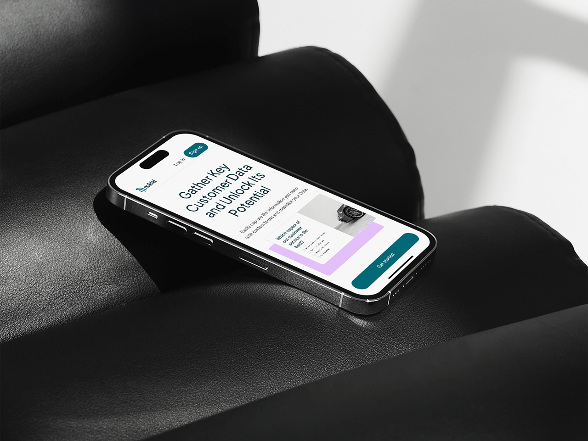
01 · Overview
What is Nuklai?
Nuklai turns form submissions into datasets people can subscribe to for ongoing analysis. The form builder (also called the web page builder) is how data enters the platform: it lets influencers, Web3 projects and businesses gather data from their community and reward people fairly for sharing it. It also supports contests, like the Bitcoin campaign Nuklai ran itself.
02 · The problem
Data collection with no easy way to reward people
Creators and small teams wanted community data, and many wanted to incentivize it. But existing tools were built either for developers or for generic surveys, with no built-in rewards.
Design challenge: How might a non-technical creator launch a rewarded data-collection form in minutes, with no help and no technical knowledge?
03 · Role & collaboration
One designer, a lot of tight loops
- With the PM: defined the MVP and cut anything that didn’t serve the core flow: create, reward, publish.
- With engineers: weekly feasibility check-ins. They flagged that fully custom reward logic would delay launch, so we shipped fewer reward options first and designed the UI to scale later.
- With marketing: Nuklai’s Bitcoin campaign ran on the builder, giving us a real use case and fast feedback.
04 · Research
Starting with people, not screens
I combined stakeholder conversations, a short community survey and informal interviews with creators and community managers. From this I built user personas covering goals, technical comfort and frustrations.
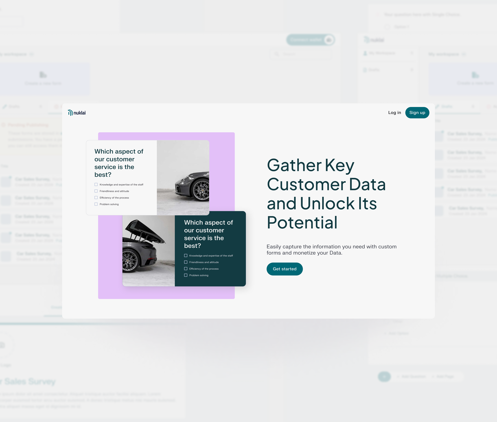
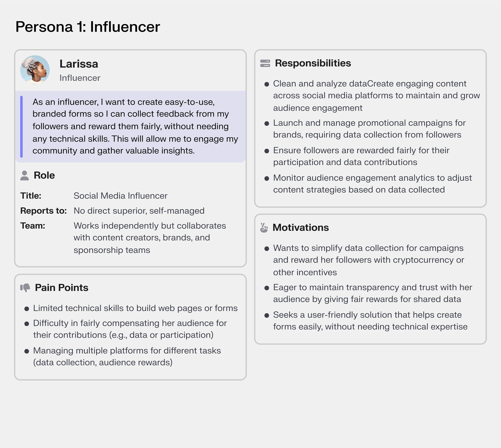
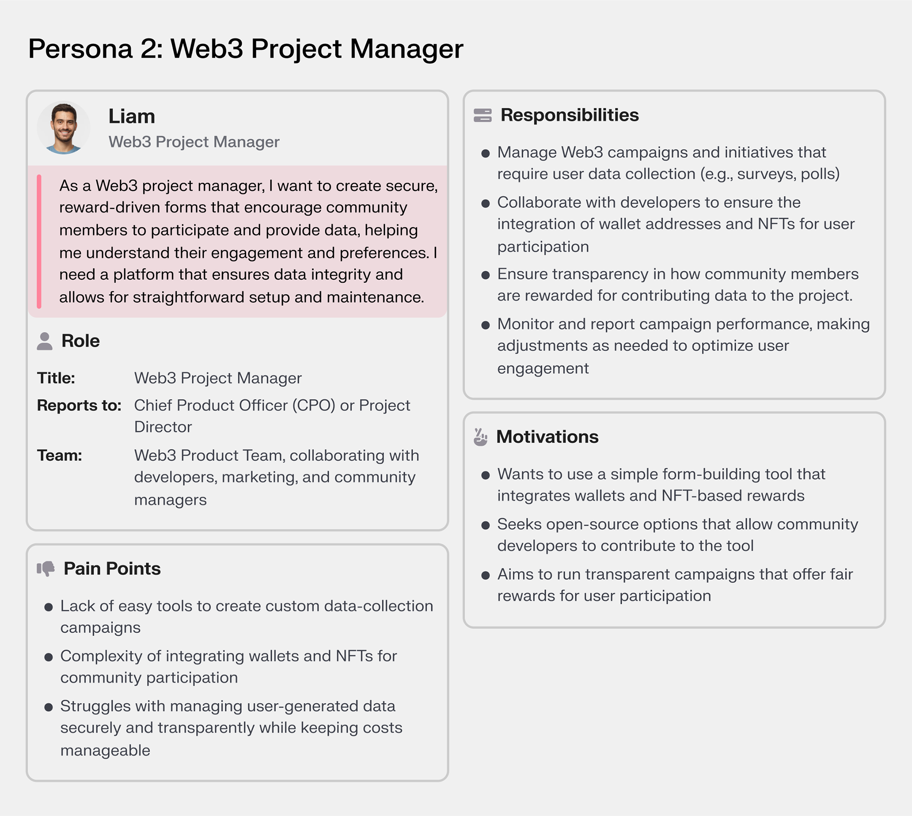
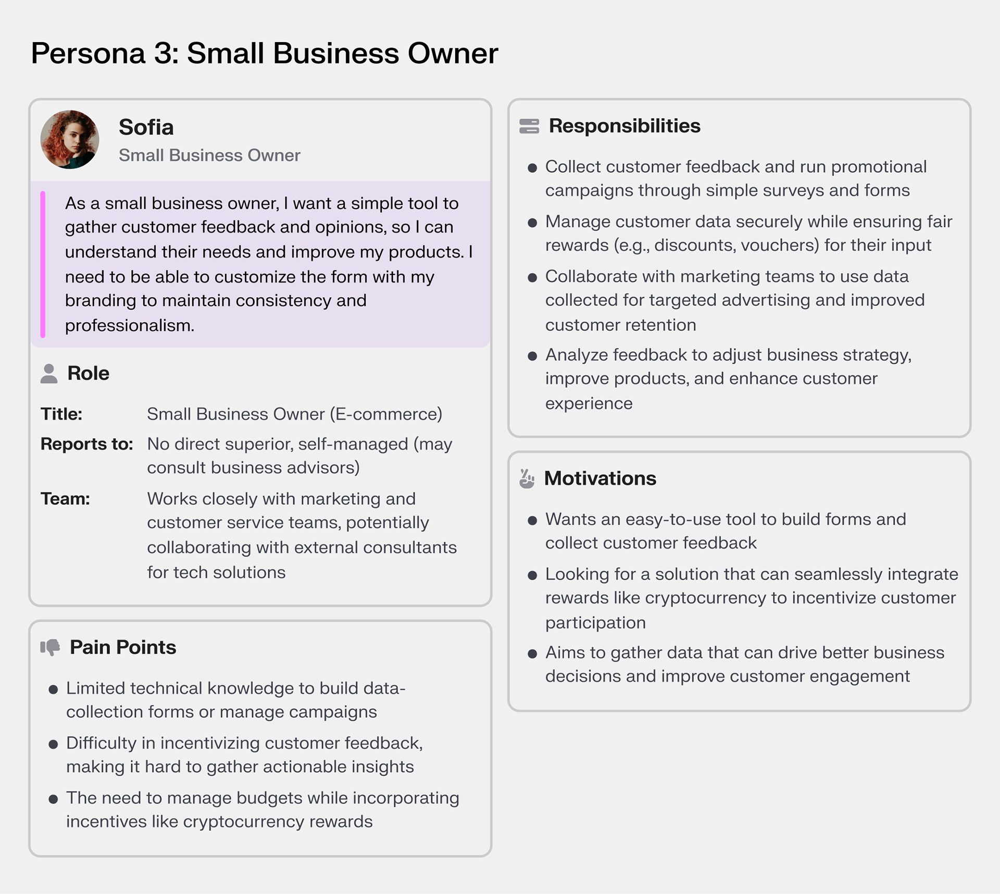
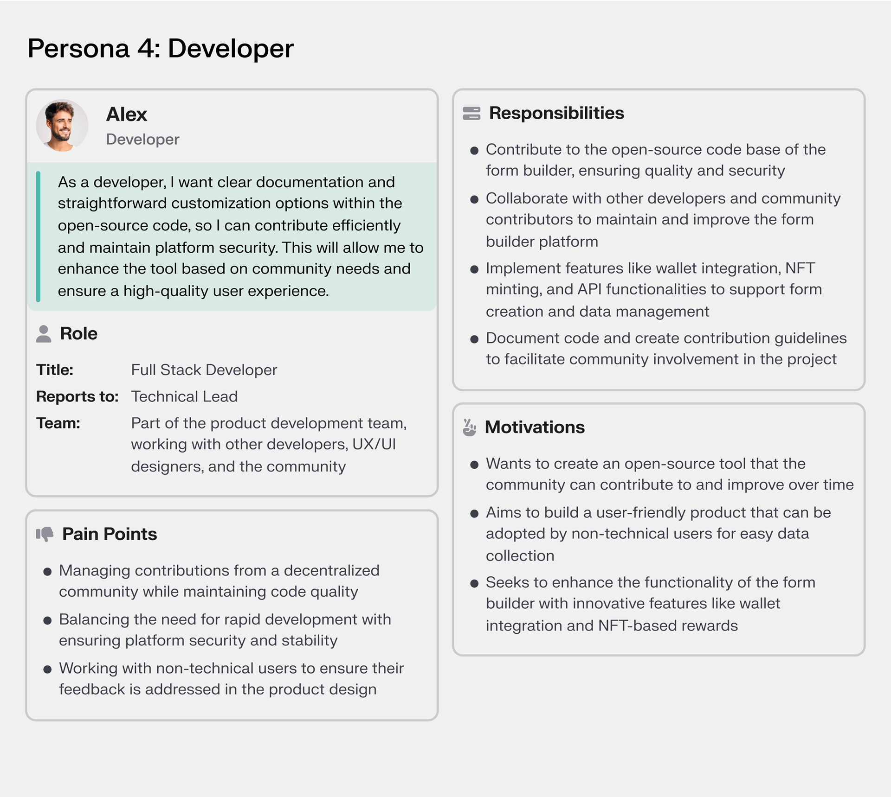
| Insight | Design decision |
|---|---|
| Creators had never used a builder with rewards and feared setting them up wrong | Rewards sit in the main creation flow, with plain-language guidance |
| Non-technical users were put off by jargon and complex settings | No-code admin panel, simple labels, sensible defaults |
| Creators cared about looking professional and on-brand | Customization for logos, banners and custom questions |
| Needs ranged from quick polls to large campaigns | Flexible question types and form configuration |
05 · User flow
Mapping the journey before drawing screens
I mapped the full user flow from first sign-in to a published, reward-enabled form. This exposed an early risk: users had to make reward decisions before they’d seen their form, which felt abstract and stressful.
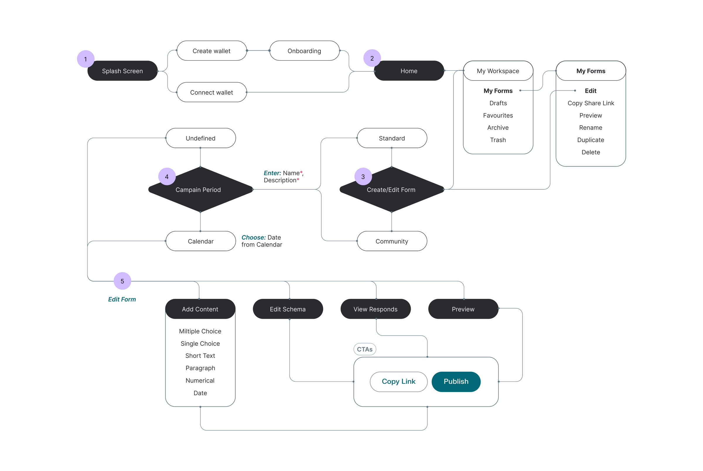
In low-fidelity wireframes I explored two structures for creating and editing: a step-by-step wizard and a single-page builder. I chose a guided flow for creation, because newcomers needed hand-holding, and a flexible single view for editing, where returning users want speed.
05b · Wireframes
Low-fidelity screens clarifying flow and functionality
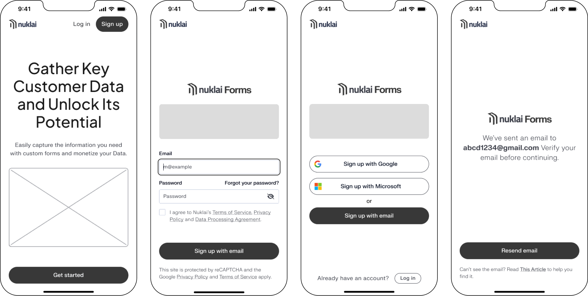
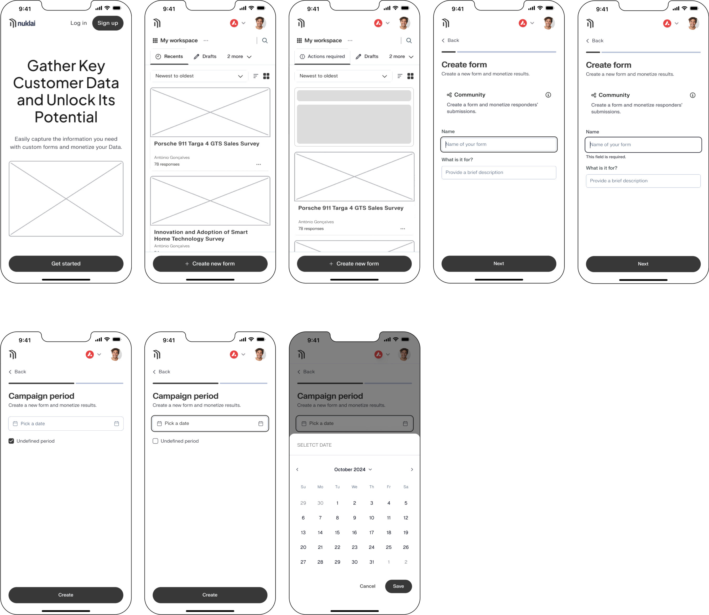
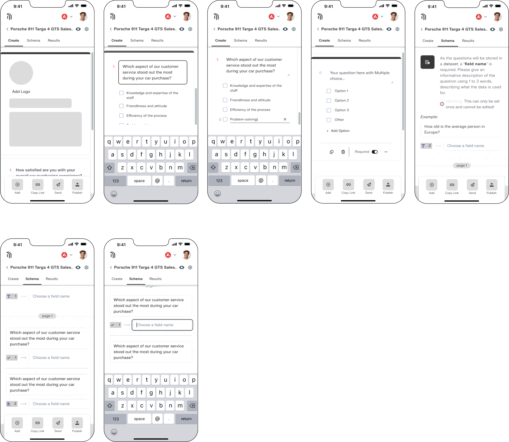
06 · Key decisions
Three calls that shaped the product
Guided creation, flexible editing
- Options
- One wizard for everything, or one dense builder.
- Why
- First-timers needed structure; returning users needed speed.
- Trade-off
- Two patterns to design and maintain.
Rewards inside the form flow
- Options
- A separate settings area, or part of creation.
- Why
- Incentives were the main reason creators wanted the product.
- Trade-off
- A longer flow, offset by smart defaults.
Simple reward options for v1
- Options
- Many configurable types, or a small set.
- Why
- Engineering feasibility, and too many options would overwhelm newcomers.
- Trade-off
- Less flexibility at launch, with a path to expand.
07 · Testing & iteration
What test participants taught us
I tested the prototype with people matching our personas. Their task: create and publish a rewarded form.
What we found
- Several participants missed or misunderstood the reward step
- Unclear whether a form was a draft or already live
- Question-type names confused people new to form tools
What I changed
- Clearer reward step with a short explanation and a participant-view preview
- Explicit draft/published status with a confirmation before going live
- Plain-language question types with small examples
08 · Final design
High-fidelity screens
The three core flows as shipped: onboarding, creating a form and editing a form.
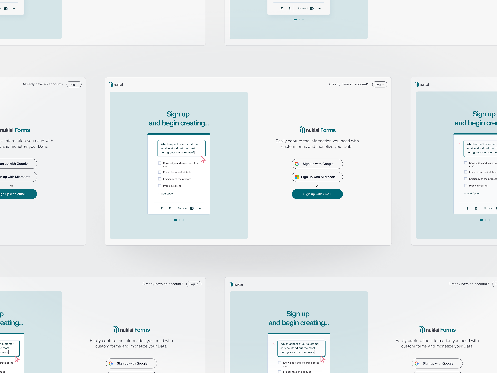
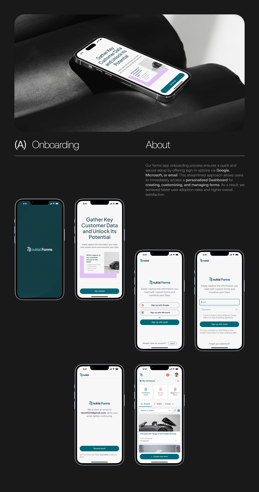
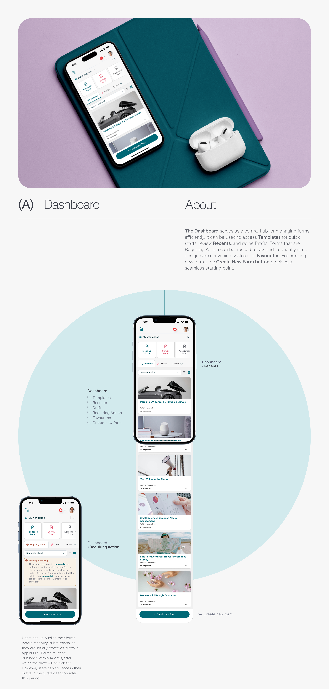
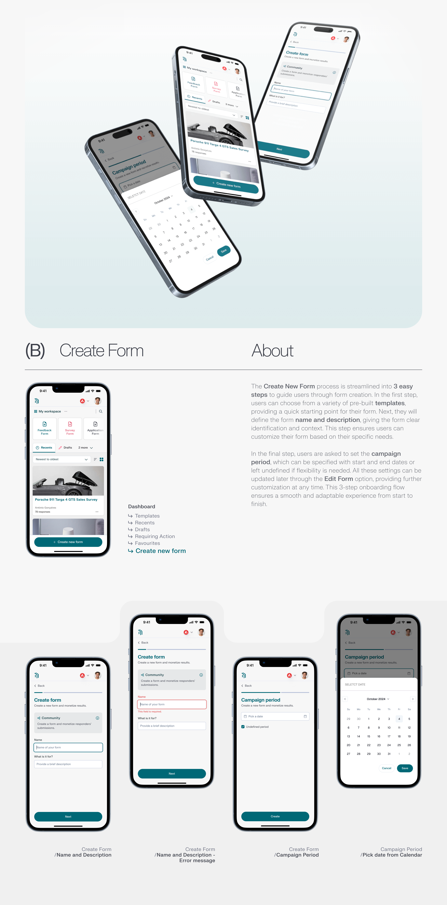

09 · Outcome & learnings
Shipped, and used for a real campaign
The builder shipped and powered Nuklai’s own Bitcoin campaign, the first real-world test of the product.
- Testing the reward flow earlier would have saved a design iteration.
- Designing alongside engineering kept scope realistic and avoided rework.
- For a new kind of product, plain language mattered as much as UI.
Want to talk through the process?
Get in touch